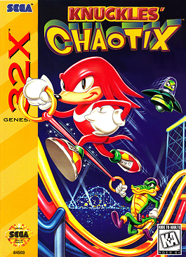

Sonic 1

Sonic the Hedgehog — це комп’ютерна гра -платформер 2D , розроблена Sonic Team та випущена Sega в Північній Америці 23 червня 1991 року.
Сюжет
Злий учений д-р. У пошуках шести Смарагдів Хаосу, які, як кажуть, мають містичну силу, Іво Роботнік перетворив тварин Південного острова на агресивних роботів і замкнув їх у металевих контейнерах. Синій антроморфний їжак Сонік хоче звільнити тварин і зупинити злого вченого, тому він пробирається до доктора. База Роботніка вирушає вперед, кидаючи виклик усім небезпекам і машинам, які є там і спочатку змушуючи його тікати.
Sonic 2
Sonic the Hedgehog 2 — відеогра в жанрі платформер із серії Sonic the Hedgehog , розроблена студією Sonic Team у співавторстві з її підрозділом Sega Techn Гра була випущена компанією Sega для ігрової приставки Sega Mega Drive/Genesis наприкінці листопада 1992 року і пізніше була портована на різні ігрові платформи кількох поколінь та входила до десятків збірників.
Сюжет
Головний герой їжак Сонік та його новий напарник лисиць Тейлз хочуть порушити підступні плани доктора Роботника щодо захоплення миру та отримання Смарагдів Хаосу. У порівнянні з першою частиною, геймплей Sonic the Hedgehog 2 не зазнав радикальних змін, і основною відмінністю є можливість грати вдвох . Крім того, тут у Соніка також вперше з'являється здатність spin dash , яка дозволяє головному герою розганятися на місці, згортаючись клубком.
Sonic 3
Sonic the Hedgehog 3 - четверта відеогра в жанрі платформер із серії Sonic the Hedgehog на ігрову приставку Sega Mega Drive9 4 року компанією Sega Technical Institute - американським підрозділом компанії Sonic Team .
Сюжет
Sonic the Hedgehog 3 є сюжетним продовженням другої частини
Їжак Сонік разом зі своїм другом Лисенком Тейлз також прибувають на острів Ангела. Там вони стикаються з новим персонажем - єхидним Наклзом , який є хранителем острова та його Ізумрудів. Наклз був обдурений доктором Роботником, який навіяв йому, що головні герої хочуть викрасти магічні камені, тому він стає їх противником і перш за все забирає наявні у Соніка Ізумруди. Так їжачок і лисеня пускаються в подорож по різних місцях Парячого острова, борючись з бойовими машинами доктора Роботника, що заполонили його. Періодично вони зустрічають єхидну Наклза, який створює всілякі перешкоди їхньому шляху. Наприкінці гри головні герої дістаються бази Роботника, де той готує до запуску відновлене «Яйце Смерті» [11] . Після невдалої спроби єхідні знову перегородити йому шлях, персонаж гравця вступає у фінальну битву з Роботником і зриває запуск його бойової станції, що вже почався. Пошкоджене "Яйце Смерті" падає назад на острів Ангелів [17] .
Подальші події сюжету розвиваються у наступній грі - Sonic & Knuckles [20] .
Sonic and Knukles
Sonic & Knuckles - відеогра в жанрі платформер , що є п'ятою в серії ігор Sonic the Hedgehog на ігровій приставці Sega Mega Drive / Genesis . Гра була розроблена командою Sonic Team та Sega Technical Institute (STI) - підрозділами компанії Sega , що випустила її восени 1994 року .
Сюжет
Сонік прямує через незвідані території Парячого острова, на яких доктор Роботник розмістив свої бойові машини. Подорож приводить Соніка до печер під вулканом, в кратері якого знаходиться станція «Яйце Смерті». Через ці печери Сонік дістається Таємного палацу з Головним Смарагдом, проте там він знову стикається з Наклзом і між героями зав'язується бій. Тим часом доктор Роботник проникає в Таємний палац і викрадає Головний Смарагд. Зрозумівши, що Сонік на його боці, Наклз допомагає йому дістатися до порталу, що переміщує їх до древніх руїн, що ширяють у хмарах, звідки вони спостерігають за «Яйцем Смерті», що піднімається в небо. Добравшись до вершини руїн, головний герой встигає застрибнути в яйце Смерті, що відлітає на орбіту. Він доводить станцію до руйнування і входить у фінальну битву з величезним роботом доктора Роботника, який використовує силу Головного Смарагду. Після знищення робота і «Яйця Смерті», Сонік разом із Головним Смарагдом падає в океан, але його рятує лисеня Тейлз на своєму літаку «Торнадо».
Сюжетна лінія єхидни Наклза розвивається після історії Соніка, коли Наклз, що розслабляється в компанії звірів у грибному лісі, виявляється атакований ЕггРобо. Борг Наклза як охоронця Парячого острова - протистояти всім чужинцям, і він негайно пускається в гонитву за цим роботом. Наклз подорожує тими ж місцями острова, що і Сонік, знищуючи бойові машини доктора Роботника і періодично борючись із Егг-Робо. Між єхидним і металевим їжаком зав'язується битва, в ході якої Меха Сонік використовує енергію Головного Смарагду Хаосу, що знаходиться поруч, і приймає супер-форму. Коли Наклз перемагає робота, руїни в хмарах починають обрушуватися, але на допомогу єхидні приходить Сонік, який керує своїм літаком Торнадо. Разом вони відвозять Головний Смарагд назад на Прямий острів. .
Sonic CD
Sonic the Hedgehog CD , на територіях Європи та США відома під назвою Sonic CD - відеогра в жанрі платформер , розроблена компанією Sonic Team і видана Sega восени 1993 року . Є першою та єдиною грою серії Sonic the Hedgehog , що вийшла на приставку Sega Mega-CD . Гра пізніше була портована на різні ігрові платформи кількох поколінь та входила до складу кількох збірників.
Сюжет
Сонік бачить що мала планета прикована на гору Еггманом. Сонік хоче врятувати малу планету від знищення її природи.На ній він зустрічає Емі Роуз, але її краде новий робот Еггмана "Метал сонік".Сонік має подорожувати в минуле, щоб зламати бази Еггмана або знайти нові артефакти "смаргди часу". Але в цій грі каноном є погана кінцівка. В якій сонік тікає з Емі з малої планети, потім бере і кидає в Еггмана камінь так сильно, що Еггман
падає.Але мала планета все ще прикована до гори.І вона буде завжди тільки на цьому місці.
Knukles chaotix

Knukles chaotix - це остання 2D гра в серії класики від SEGA. Вона була випущена для консолі Sega 32X у 1995 році.
Сюжет
єхидна Наклз охороняв Карнавальний острів ( Carnival Island ) - Величезний високотехнологічний парк розваг . Лікар Роботник прибуває туди, щоб вкрасти силу смарагдів, які контролюють весь острів, і використовувати їх для створення пристроїв. Лиходій ловить крокодила Вектора , бджолу Чармі та броненосця Майті , садить їх у заморожуючу машину і збирається зробити те ж саме з хамелеоном Еспіо, але Наклз проганяє вченого. Єхидна виявляє, що він може врятувати одного друга на якийсь час, використовуючи силу кілець, яка тримає двох партнерів разом, як гумова стрічка. Наклз, Еспіо, Чармі, Вектор, Майті, а також роботи Хеві та Бомб працюють разом спільно, щоб врятувати острів від Роботника.
Згідно з японським керівництвом, таємничий острів, на якому відбувається дія гри, виник у морі незабаром після подій Sonic & Knuckles . Доктор Роботник виявив острів і знайшов там таємниче кільце з описом Кільця Хаосу - стародавніх кілець, пройнятих енергією Смарагдів Хаосу. Для того, щоб знайти ці кільця, вчений побудував на острові свою базу Newtrogic High. Майті, Еспіо, Вектор і Чармі також прибули на острів, але були захоплені Роботником і Метал Соніком , і поміщені в машини, що заморожують. Єхидна Наклз, зацікавлений дивним островом, прибуває туди та рятує хамелеона. Двоє героїв вирушають зупинити Роботника, який має намір отримати Кільця Хаосу.
Після завершення всіх п'яти рівнів гравець опиняється в зоні Newtrogic High, де зустрічає Метал Соніка, що приєднується до механізму вибору рівнів. Гравцю необхідно натиснути кнопку з п'яти панелей і вибрати одну певну, знищивши інші чотири. Після перемоги над роботом доктор Роботник, завдяки силі Кільця Хаосу, перетворить металеву копію Соніка на форму Метал Сонік Кай. У кіберпросторовій арені гравець має перемогти його. Після перемоги, якщо гравець зібрав усі шість Кільців Хаосу, у титрах показують головних персонажів гри, а також їжака Соніка та лисенка Тейлза літаком «Торнадо». Інакше в останніх титрах з'являється Метал Сонік Кай, що літає над містом, що горить.
Ігри для Game Gear

Game Gear - це портативна консоль від SEGA на якій вийшло багато ігор про Соніка. Найпопулярніші з них:
Sonic the heghog, Sonic the heghog 2 і sonic drift 1 і 2.
Sonic adventure
Sonic Adventure - відеогра серії Sonic the Hedgehog в жанрі платформер , розроблена командою Sonic Team і видана компанією Sega в 1998 році для ігрової приставки Dreamcast . У 1999 році було випущено оновлене видання Sonic Adventure International . Режисерська версія [en] Sonic Adventure DX: Director's Cut була випущена в 2003 році на GameCube, а через рік - на Windows . У 2010 році ця версія була портована на консолі Xbox 360 і PlayStation 3 і стала доступною в сервісах цифрової дистрибуції .
Сюжет
Коли Наклз сторежував свій мастер смаргд. Смаргд розбився і із нього вийшла вода яка шивко потекла.
Дія йде до Соніка. Сонік бачить, що поліція їде кудись. Сонік біжить за ними. Там вони зустрічають монстра із води, поліція хотіла застрілити його, але на воду це не працювало. Сонік намагається виграти мостра, але він тікає у каналізацію.Сонік їде в руїни на поїзді, щоб зустріти Тейлза, але їх зустрічає Еггман.Сонік виграє його.Сонік йде назад в місто і зустрічає Емі але її краде робот Еггмана.Сонік йде за ним до бази Еггмана.
там він зустрічає монстра із води(Хаоса), сонік майже зміг вийграти але Хаос поїдає останній смаргд хаоса.
Ізза цього Хаос нападає на місто. Сонік завдяки позитивній енергії відновлює смаргди хаосу і стає супер соніком.Сонік виграє хаоса і завдяки позитивній енергії перетворює Хаоса в доброго.
Sonic adventure 2
Sonic Adventure 2 - відеогра в жанрі платформер , розроблена американською філією компанії Sonic Team і випущена компанією Sega для консолі Dreamcast в червні 2001 року ; гра вийшла через 10 років після появи першої гри Sonic the Hedgehog
Сюжет
Доктор Еггман виявляє у щоденнику свого діда Джеральда Роботника інформацію про існування секретної зброї [28] . Бажаючи отримати його, лікар проникає на основу організації «GUN». "Зброєю" виявився їжак чорного кольору на ім'я Шедоу , який стверджує, що він є найвищою формою життя і пропонує Еггману захопити владу над світом, використовуючи космічну колонію АРК [29] . Чорний їжак краде один із Смарагдів Хаосу, але звинувачують у крадіжці Соніка . Під час цих подій Шедов згадує про дівчину на ім'я Марія, за смерть якої він збирається помститися всьому людству. Тим часом, з вини Шед Соніка заарештовують і відправляють у в'язницю [30] .
Тим часом, Наклз стикається з кажаном Руж і Еггманом, які хочуть вкрасти Майстер Смарагд і використовувати його у своїх цілях [31] . Єхидна розбиває Майстер Ізумруд і починає пошук розсіяних уламків, щоб потім відновити реліквію [31] . Хоча Руж також має намір збирати уламки для своїх цілей [31] , вона виконує завдання уряду - шпигунить за Еггманом. Ця місія змушує її проникнути в космічну колонію АРК, де Шедоу та Еггман збираються зарядити гармату «Затемнення» ( англ. Eclipse Cannon ) для захоплення влади над світом. Щоб досягти мети, чорний їжак і лікар допомагають кажану в пошуку Смарагдів Хаосу.
Тейлз і Емі Роуз проникають на Тюремний острів ( Prison Island ) і рятують Соніка [32] , Еггман, Шедоу і Руж збирають три Смарагди Хаосу, а на острів, на якому знаходився синій їжак, встановлюють бомбу для знищення. Еггман потім передає всьому світу звернення, в якому демонструє силу енергетичної гармати, знищивши половину Місяця [33] [34] . Сонік і компанія відлітають у космос на космічному шатлі, але під час польоту Наклз втрачає осколки Майстра Смарагда і залишає групу, щоб знову зібрати їх, але на шляху зустрічає Руж [35] [36] . Під час бою єхидна рятує життя кажана; як винагорода вона віддає свої зібрані уламки Майстра Ізумруду[36] .
На борту колонії АРК Тейлз показує фальшивий Смарагд Хаосу, який був створений для ліквідації наслідків використання реальних Смарагдів та знищення гармати затемнення. Сонік збирається встановити підроблений Смарагд у гармату, коли Еггман оголошує, що він захопив лисенка та Емі [37] . Сонік намагається дати Еггману підроблений камінь, але Еггман, перехитривши Тейлза, дізнається, що Ізумруд не справжній і через секунду синій їжак потрапляє в пастку, потім летить у космос [38] . Використовуючи підроблений Смарагд, Сонік виконує прийом «Хаос Контроль», однак його друга спроба встановити в гармату затемнення підроблений Смарагд Хаосу переривається сутичкою з Шедоу, в якій синій їжак зазнає поразки [39] .
У цей час Еггман збирає всі сім смарагдів Хаосу і намагається використати гармату «Затемнення» на повну потужність. Тим часом активізується і з'являється послання Джеральда Роботника [40] . Дід Еггмана заявляє, що планує здійснити помсту людству за смерть Марії та колег з колонії — АРК зіштовхнеться із Землею та знищить усю планету [41] . Головні герої та головний антагоніст гри Еггман працюють разом, щоб нейтралізувати Смарагди Хаосу та Майстер Смарагд і запобігти зіткненню [41] . Шедоу спочатку не бере участі, але Емі нагадує йому слова Марії, в яких йшлося про необхідність служити для суспільства [42] . Він наздоганяє Соніка та Наклза після того, як ті дісталися центру колонії.
Після відключення різних функцій безпеки Сонік і Наклз стикаються з прототипом вищої форми життя і «братом» Шедоу Біолізардом ( англ. Biolizard ) [43] . Шедоу перемагає істота, але вона використовує Хаос Контроль і зливається з гарматою «Затемнення», ставши Фіналхазардом ( англ. Finalhazard ) [27] . Він продовжує наближати колонію до Землі [44] . Використовуючи силу Смарагдів Хаосу, Сонік та Шедоу перетворюються на супер форми та перемагають прототипу. Потім Сонік та Шедоу використовують Хаос Контроль для телепортування колонії на безпечну орбіту [45] . Цей процес, однак, виснажує енергію Шедоу. Виконавши обіцянку Марії - служити людям, чорний їжак «гине» [45]. Людство святкує, команда урочисто висловлює подяку чорному їжу.
Sonic 2006
Sonic the Hedgehog , також відома як Sonic 2006 і Sonic Next-Gen - відеогра в жанрі платформер з серії Sonic the Hedgehog на ігрові консолі PlayStation 3 і Xbox 360 , розроблена студією Sonic Team і випущена Sega восени 2006 року . У 2009 році проект був перевиданий у сервісі Xbox Live , але пізніше був звідти вилучений.
Сюжет
У місті Солеанна відкриття "фестивалю Сонця" порушується прибуттям доктора Еггмана , який вимагає від принцеси Еліс віддати йому Смарагд Хаоса . На допомогу приходить їжак Сонік , який тікає разом з Еліс від лиходія. Тим не менше, учений все одно наздоганяє Соніка на своєму кораблі і за допомогою Еггмобіля викрадає принцесу. Але, завдяки їжу та лисенку Тейлзу , героїня знову на свободі . У цей же час на базі Еггмана урядові агенти їжак Шедоу і кажан Руж шукають Скіпетр Темряви. Після битви з лікарем скіпетр руйнується, і з нього виходить дим, який набуває форми Шедоу . Представившись як Мефілес, Він відправляє героїв у майбутнє, туди ж вирушає і сам; там демон знаходить їжака Сільвера і кішку Блейз і каже їм, що в загибелі їхнього світу винний синій їжак .
Потрапивши в минуле, Сільвер і Блейз знаходяться далеко один від одного. У Солеанні срібний їжак вперше бачить Соніка і бореться з ним . Після бою Сонік тікає у невідомому напрямку. Сільвер хоче знову помститися синьому їжу. У пошуках свого суперника гостю з майбутнього допомагає Емі Роуз . Знайшовши Соніка, Сільвер хоче нав'язати бій, та його зупиняє Емі . А тим часом Еггман, скориставшись моментом, знову викрадає принцесу. Сонік, Тейлз і ехідна Наклз, що долучився до них, збираються йти разом для порятунку Еліс. Лиходій пропонує викуп: віддати йому Ізумруд Хаосу, а в обмін - звільняє героїню з полону . Незважаючи на протести своїх друзів, синій їжак віддає камінь Еггману, але він відправляє команду в майбутнє . Шедоу і Руж знаходять робота E-123 Омега і потім разом із Соніком, Тейлзом і Наклзом за допомогою двох Смарагдів переносять себе в теперішнє . Після збору кількох каменів Шедоу дізнається від Мефілеса, що в майбутньому Омега ув'язнений за звинуваченням у руйнуванні світу. Їжак вирушає назад у майбутнє і рятує свого друга.
Шедоу, знову повернувшись у справжнє, знайомиться із Сільвером. Обидва герої вирушають у минуле на десять років тому. Там вони дізнаються про науковий проект «Соляріс», який керує герцог Солеанни, який, у свою чергу, є батьком Еліс. Завдяки цьому проекту з'явилися Ібліс та Мефілес . Герцог дає Шедоу Скіпетр Темряви, щоб той запечатав туди Мефілеса, а Сільвер успішно ловить Ібліса і замикає його всередині принцеси . Перш ніж померти від ран, отриманих в результаті інциденту, правитель каже своїй дочці, щоб вона ніколи не плакала, оскільки це звільнить монстра . Поки двоє їжаків перебувають у минулому, Сонік на сьогодні не може досягти корабля Еггмана, всередині якого сидить Еліс. Сильвер, що прибув, допомагає синьому їжакові повернутися назад у часі, щоб врятувати принцесу . Поки Сонік розуміється на вчених, Шедоу, Руж, Омега, Сільвер і Блейз повертаються в майбутнє для знищення демонів. Якщо Мефілеса вдалося швидко перемогти , то заради знищення Ібліса Блейз пожертвувала своїм життям, запечатавши його у свою душу .
Оговтавшись від поразки Мефілес вбиває Соніка за допомогою кристала з лезом . Еліс плаче, і з неї вивільняється Ібліс. Мефілес поглинає Ібліса, перетворюючись на монстра, відомого як Соляріс . Принцеса відчуває, що синій їжак може бути живий, а Сільвер розуміє, що воскресити персонажа зможуть Смарагди Хаосу. Герої з трьох команд важко знаходять каміння, і за допомогою їх і поцілунку Еліс відроджують Соніка в його супер-формі . Разом із Шедоу та Сільвером, які теж прийняли свою супер-форму, вони успішно перемагають Соляріса. Після цього Сонік та принцеса повертаються назад, щоб знайти оригінальну форму Солярісу та загасити його. Еліс гасить полум'я, що спричиняє припинення існування Соляріса і, разом з цим, стирає всі події гри . Наприкінці знову з'являється «Фестиваль Сонця», лише без нападу Еггмана.
Sonic unleashed
Sonic Unleashed , в Японії відома як Sonic World Adventure - відеогра серії Sonic the Hedgehog , випущена в 2008 році для консолей і мобільних [12] . У створенні проекту брали участь студії Sonic Team та Dimps
Сюжет
Повітряний флот, керований професором Еггманом , летить над планетою, схожою на Землю . На одному з кораблів знаходиться їжак Сонік , який намагається зупинити лиходія. Завдяки роботі вчений зміг схопити головного героя, але той за допомогою Ізумрудів Хаоса перейшов у супер-форму та атакував лиходія. Їжак женеться за Еггманом, але зрештою потрапляє в камеру-пастку. За допомогою винаходу лікаря у головного героя висмоктується енергія Ізумрудів. Їхня сила використовується для потужної гармати, яка розколює планету на сім частин, а з ядра з'являється монстр, відомий як Темний Гайя [3]. Через винаходи Еггмана і каменів, що втратили силу, Сонік став перетворюватися на перевертня. Після цього лікар викидає з камери їжака та Смарагди; вони падають на розламану планету. Опритомнівши, Сонік знаходить звірка, що втратив пам'ять [40] . Через докори совісті, що, можливо, саме він викликав амнезію у нового знайомого, Сонік вирішує допомогти звірку повернути пам'ять, а також відновити планету. Після невеликої розмови їжак повертається у свій звичайний стан. Прибувши до міста Апотос, головний герой дає звірятку ім'я Чіп [36] . Після заходу сонця Сонік знову перетворюється на перевертня. Обстеживши населений пункт, персонажі зустрічають лисенка Тейлза . Він повідомляє, що професор Пікл із університету Спагонії може допомогти їм у відновленні планети [41], але після прибуття до Спагонії стає відомо, що професора викрадено: його тримають на базі Еггмана в Мазурі [42] . Знайшовши Пікла, герої з професором повертаються до університетської лабораторії. Пікл розповідає про походження Темного Гая. Він також радить зібрати Ізумруди для декількох Храмів Гайя, тому що саме ці кристали здатні повернути цілісність планеті [43] . Після розмови з професором Сонік-перевертень попадається на очі їжачку Емі Роуз , але та, не впізнавши Соніка в новому вигляді, тікає [44] . Згодом вона дізнається про свою «другу половину» і приєднується до команди Пікла [45] .
Їжак і Чіп вирушають на кожен континент для пошуку Смарагдів та храмів, щоб зрештою відновити планету. А в цей час доктор Еггман здійснює свій план будівництва Еггманленда, звідки потім має намір захопити весь світ. Під час відновлення сили шостого Ізумруду Хаосу до Чіпа повертається пам'ять. Виявляється, він насправді Світлий Гайя, протилежність Темного Гайя [46] . Чіп втратив пам'ять, коли розкололася планета, бо прокинувся раніше за термін. Тепер завдання Соніка - зупинити лікаря, поки той не повернув Темному Гайя його повну силу [47] . Соник і Чіп вирушають до останнього храму, над яким антагоністзбудував Еггманленд. Незважаючи на те, що їжу вдається повернути силу останньому Ізумруду Хаосу і остаточно перемогти свого суперника, Темний Гайя, висмоктавши темну енергію, яка знаходилася в Соніку і перетворювала його на перевертня, завершує своє відновлення [48] . Раптом послабшавши, Сонік не може боротися, Чіп вирішує протистояти монстру самостійно. Звірятко закликає до себе Храми Гайя і створює з них колоса [49]. Незабаром Сонік відновлює сили і після перетворення ворога на ідеальну форму трансформується в Супер Соніка. Їжак і Чіп перемагають Темного Гайя, а планета знову стає цілою. Знесилений Сонік колос відправляє на поверхню. Прийшовши до тями, головний герой знаходить на землі намисто маленького звірка і надягає його на руку як пам'ять про цю пригоду [50] . Наприкінці гри Сонік біжить знову по околицях Апотоса, а поряд з ним летить Тейлз літаком «Торнадо» [50] .
У сцені після титрів Орбот перераховує всі провалилися плани Еггмана, через що останній починає ганятися за роботом.
Sonic generations
Sonic Generations - відеогра серії Sonic the Hedgehog в жанрі платформер , розроблена студією Sonic Team і видана компанією Sega в 2011 році для ігрових консолей Xbox 3 3 , Nintendo 3DS та персонального комп'ютера .
Сюжет
У соніка день народження і усі прийшли його привітати, але на них нападає злий монстр "Тайм Ітер".Усіх друзів
заморозили у часі. Усіх крім соніка. Сонік проходить через усі рівні з минулих ігр для того, шоб повернути своїх друзів.В кінці Сонік і Сонік із минулого будуть битися проти Еггмана і Еггмана із минулого які приборкали Тайм Ітера.Вони виграють і усі повертаються до дня народження Соніка.Сонік із минулого повертається
у свій час.
Sonic colors
Sonic Colors — видеоигра серии Sonic the Hedgehog в жанре платформер, разработанная студиями Sonic Team и Dimps для игровых платформ Wii и Nintendo DS. Обе версии были выпущены в ноябре 2010 года.
Сюжет
Антагоніст гри доктор Еггман , нібито з почуття каяття за свої минулі провини, відкриває в космосі міжзоряний парк розваг [12] . Їжак Сонік та його друг, лисеня Майлз «Тейлз» Прауер , не вірять у добрі помисли свого давнього ворога і вирішують відвідати парк [11]. Після прибуття вони стають свідками того, як два робота Еггмана, Орбот і Кьюбот, намагаються зловити двох дивних інопланетних істот - віспів. Після порятунку інопланетян Сонік виявляє, що віспи можуть взаємодіяти з його тілом, у результаті у нього з'являються різні здібності. За допомогою пристрою-перекладача Тейлза друзі дізнаються від білого віспу на ім'я Якер, що його раса колись жила на далекій планеті, поки доктор Еггман не захопив її. Тепер учений має намір використати енергію поневолених жителів для здійснення своїх планів. Сонік та Тейлз погоджуються допомогти Якеру врятувати його побратимів.
Сонік подорожує парком, попутно звільняючи віспів і знищуючи роботів Еггмана. У версії для Nintendo DS він також час від часу стикається зі своїми друзями, що вирішили відвідати парк: єхидною Наклзом , їжаком Шедоу , кажаном Руж , їжачихою Емі Роуз , їжаком Сільвером , кішкою Блейз , крольчихою Крим , 3 , крокодилом Вектором , хамелеоном Еспіо та бджолою Чармі [32]. Через деякий час герої зустрічають доктора Еггмана, який на Тейлзі демонструє їжу свій новий винахід - гармату управління розумом, що працює на енергії віспів. Він розкриває, що за допомогою подібної гармати, але набагато більших розмірів, збирається завдати удару по планеті Соніка і зробити її мешканцями своїми рабами. Їжачок вирішує зупинити Еггмана і для цього починає знищувати генератори, що пов'язують парк. Зрештою Сонік і Тейлз знаходять фабрику, де у віспів висмоктують енергію, перетворюючи їх на нега-віспів. Після руйнування фабрики Сонік, Тейлз та звільнені віспи радіють, що змогли перемогти Еггмана.
Однак, незважаючи на їхні зусилля, доктор Еггман все ж таки активує гармату, але через несправність промінь не досягає наміченої мети. Розлючений Еггман нападає на їжака з лисеня на своєму новому роботі під назвою Нега-Вісп Армор, який працює на енергії віспов. Не бажаючи ризикувати життям свого друга, Сонік відправляє Тейлза на космічному ліфті на свою планету, а сам готується битися з Еггманом. Знайшовши слабке місце у робота, їжак звільняє кілька віспів, і за допомогою них перемагає лиходія. Парк розваг руйнується; врятовані віспи благополучно переносять Соніка у його рідний світ. Там Якер прощається з їжаком та лисенком і разом зі своїми родичами повертається на свою планету. Наприкінці титрів версії для Wii показаний Еггман, що знаходиться у найвіддаленішому куточку космосу разом із двома своїми роботами — Кьюботом та Орботом.
У версії гри для Nintendo DS після збору семи смарагдів Хаосу стає доступна додаткова кінцівка. Виявляється, що доктор Еггман також спіймав матір усіх віспів і перетворив її на нега-віспа. Коли вона виходить з-під контролю, Якер просить Соніка допомогти зупинити його матір. Сонік, використовуючи Ізумруди Хаосу, перетворюється на Супер Соніка , після чого вступає з нею в бій, в якому він виходить переможцем [33] . Мати віспов повертається в свою звичайну форму і дякує їжака, а потім разом з віспами вирушає додому.
Sonic Mania
Sonic Mania - відеогра серії Sonic the Hedgehog в жанрі платформер , розроблена Крістіаном Уайтхедом і студіями Headcannon іPagodaWest Games і видана компанією Sega для платформ PlayStation 4 , Xbox One , Switch комп'ютерів під керуванням Windows влітку 2017 року. Через рік відбувся випуск розширеного видання гри під назвою Sonic Mania Plus .
Сюжет
Манія мод
Незабаром після подій Sonic & Knuckles лиходій доктор Еггман вирішує помститися головним героям – Соніку , Тейлзу та Наклзу – за поразку та руйнування своєї космічної станції «Death Egg». У цей час Сонік і Тейлз виявили енергетичний сигнал з острова Ангелів. Цим джерелом сигналу є містичний камінь Рубін Ілюзій, сила якого здатна контролювати простір та час. Герої прилітають на острів літаком «Торнадо». Проте, несподівано для них, а також для Наклза, що знаходився на острові, хранителя Головного Смарагду, роботи Еггмана дісталися каменю раніше, і з його допомогою перемістили Соніка, Тейлза і Наклза в « Green Hill ». Крім того, сила Рубіна Ілюзій наділила кожного робота великою силою та унікальними здібностями, і вони перетворилися на Hard Boiled Heavies. Разом друзі вирішують завадити злим планам Еггмана та HBH із захоплення світу.
Герої проходять різні зони, принагідно борючись із бадниками, Еггманом, а також командою роботів HBH, до складу яких входять Heavy Gunner, Heavy Shinobi, Heavy Magician, Heavy Rider та Heavy King. Під час пригод сила Рубіна Ілюзій, захопленого Еггманом, періодично переміщує героїв у різні локації та у різний час. Еггман також вирішив взяти контроль над Маленькою планетою, перемістивши її на острів Ангела за допомогою рубіна і запрограмувавши Метал Сонікана захоплення планети, проте Сонік із Тейлзом знищують робота, генератори та голограму Метал Соніка. Heavy King, крім іншого, вирішує захопити Головний Смарагд для збільшення своєї потужності, однак у вівтар у цей час прибуває Наклз, який, згадуючи крадіжку каменю Еггманом, бореться з роботом і не дає вдруге забрати Смарагд. Коли герої розправилися з більшістю роботів HBH і машинами Еггмана, Heavy King зраджує лікаря і вирішує забрати Рубін Ілюзій собі, після чого знаходить ще більше сили, перетворившись на Phantom King. У цей час Сонік за допомогою сили зібраних Ізумрудів Хаосу стає Супер Соником і бореться із лиходіями. Перемігши Phantom King і Еггмана, Сонік втрачає всі Смарагди Хаосу і разом з Рубіном Ілюзій затягується в портал, який був відкритий силою каменю, а Тейлз і Наклз, що знаходяться на острові Ангела, бачать,
Подальший розвиток сюжету відбувається у наступній грі серії - Sonic Forces .
Енкор мод
Після подій Sonic Forces, Класичний Соник повертається у свій всесвіт. У Angel Island, він помічає капсулу, в якій були замкнені Майті та Рей. В залежності від вибору гравця, одним з них стає Heavy Magical, який за допомогою Рубіна Ілюзій відроджує роботів. Encore mod являє собою ускладнену версію рівнів mania mod, а також їх змінену палітру. Тейлз, Наклз, Майті і Рей. У цьому режимі ускладнені не тільки рівні, але й механіка життів. навіть із сімома смарагдами хаосу не переміщається на egg river zone як у mania mod. Наприкінці рубін ілюзій знищує базу егмана, а сам злий Доктор збігає.
Sonic Forses
Sonic Forces - відеогра серії Sonic the Hedgehog в жанрах платформер і action-adventure , розроблена студією Sonic Team і видана компанією Sega 7 листопада 2017 для консолей PlayStation 4 , Xbox One , Nintendo Switch та для персональних комп'ютерів під керуванням Windows .
Сюжет
Намагаючись вкотре зупинити свого заклятого ворога, головний герой натрапив на створене Еггманом могутню істоту, відому як Інфініт. Після цього Сонік пропадає тривалий час. Зникнення синього їжака стало шокуючою новиною для всіх. Але його друзі, що пішли в підпілля, все одно вирішили боротися, сформувавши опір з єхидним Наклзом на чолі. Вони рятують Соніка, який весь цей час був бранцем лікаря. Незабаром після цього з'являється Класичний Сонік, аналог Соніка з іншого виміру, який був перенесений у вимір Сучасного Соніка тією самою силою, яку використав Еггман для завоювання світу та створення Інфініту – силою Рубіна Ілюзій. Також до партизан приєднується новобранець-персонаж, створений гравцем. Тепер, за допомогою своїх друзів, сучасний Сонік вирушає рятувати світ.
На початок